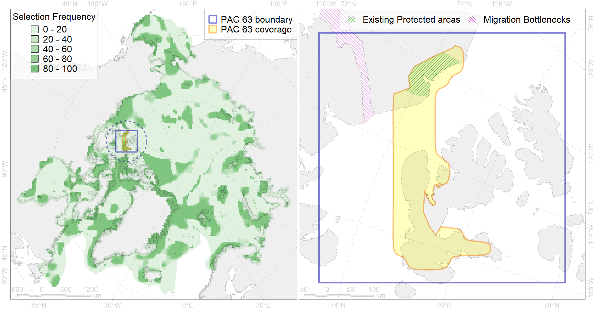

Region 63
Region 63
“ArcNet” scenario 33 achievement for region 63.
Use Accenter for advanced mode.

0
CFs inside of Region completely
1
CFs inside of Region at quarter
0
Complete-targets achievement by Region
2
Half-targets achievement by Region
| CF | Name | Target Achievement for Region | Proportion of Target Achievement in Region | Amount Proportion in Region |
|---|---|---|---|---|
| 9036 | polar bear denning areas of VM (Viscount Melville Sound) subpopulation | 67.2% | 66.9% | 48.7% |
| 6012 | Brent goose (Branta bernicla nigricans) Grey-bellied breeding&moulting grounds | 97.0% | 90.0% | 20.4% |
| 9032 | polar bear denning areas of NB (Northern Beaufort Sea) subpopulation | 24.2% | 24.1% | 17.6% |
| 7024 | Western Canadian archipelago region | 33.7% | 28.5% | 6.1% |
| 9018 | polar bear of the VM (Viscount Melville Sound) subpopulation distribution | 9.4% | 8.9% | 5.4% |
| 3050 | Multiyear Ice distribution in September in the Beaufort Sea LME | 18.3% | 12.0% | 4.5% |
| 5016 | Beluga of the Eastern Beaufort Sea summer core distribution | 4.9% | 4.9% | 4.1% |
| 5015 | Beluga of the Eastern Beaufort Sea winter distribution | 5.1% | 5.1% | 3.5% |
| 3006 | Fast Ice distribution in the Canadian Archipelago region | 41.7% | 9.9% | 3.4% |
| 5108 | Bowhead whale of the Bering-Chukchi-Beaufort population summer distribution | 8.1% | 5.0% | 3.3% |
| 7137 | III.1.1.4. Canadian Archipelago glacial troughs | 48.0% | 7.4% | 3.3% |
| 2005 | Bearded seal whelping areas in the Beaufort Sea | 8.7% | 5.1% | 3.2% |
| 7134 | III.1.1. 1. Canadian Arctic Archipelago shelf | 31.6% | 5.3% | 2.7% |
| 2036 | Ringed seal foraging areas in the Beaufort Sea | 7.5% | 3.3% | 2.7% |
| 4062 | Range of the White Sea eelpout (Lycodes marisalbi), American population (F 51) | 31.2% | 4.3% | 2.4% |
| 2004 | Bearded seal whelping areas in the south of the Canadian Archipelago | 7.6% | 6.8% | 2.1% |
| 7014 | Core of Canadian - Greenland Province of Arcto-Atlantic zoogeographical region | 19.1% | 2.7% | 2.0% |
| 4035 | Feeding area of the Lake trout (Salvelinus namaycush) (F32) | 8.3% | 3.3% | 1.8% |
| 9029 | polar bear denning areas of LS (Lancaster Sound) subpopulation | 2.1% | 2.1% | 1.6% |
| 2042 | Ringed seal whelping areas in the Beaufort Sea | 4.0% | 1.8% | 1.4% |
| 6010 | Brent goose (Branta bernicla nigricans) American breeding&moulting grounds | 4.9% | 3.4% | 1.4% |
| 7133 | III.1. Canadian Arctic Archipelago shelf and margin | 24.3% | 2.1% | 1.2% |
| 4074 | Fish zoogeography, Arctic Region, High-Arctic Shelf Province, Canadian-Greenland District (10A) | 11.2% | 1.6% | 1.1% |
| 2014 | Bearded seal whelping areas in the north of the Canadian Archipelago | 3.2% | 2.1% | 0.9% |
| 4029 | Feeding area of the Arctic charr (Salvelinus alpinus), anadromous populations (F28) | 1.6% | 1.4% | 0.8% |
| 4053 | Range of the Fourhorn Sculpin (Myoxocephalus quadricornis) (F 45), Euro-Asian populations | 19.1% | 1.1% | 0.8% |
| 7136 | III.1.1.3. Archipelago inner shelf of low and medium profile | 10.4% | 1.8% | 0.8% |
| 4007 | Feeding/nursery area of the Cisco (Coregonus artedi) (F 13) | 1.7% | 1.2% | 0.7% |
| 3032 | Marginal Ice Zone distribution in July in the Beaufort Sea LME | 1.5% | 1.4% | 0.5% |
| 2061 | Ringed seal circumpolar foraging areas as predicted by MIZ distribution | 1.3% | 0.7% | 0.4% |
| 4037 | Distribution of the Glacial cod (Arctogadus glacialis) (F34) | 2.8% | 0.7% | 0.4% |
| 6066 | Common eider (Somateria mollissima v-nigrum) breeding&moulting grounds | 0.9% | 0.9% | 0.3% |
| 3051 | Multiyear Ice distribution in September in the Northern Canadian Archipelago LME | 1.0% | 0.5% | 0.2% |
| 4019 | Feeding area of the Vendace, Least cisco (Coregonus sardinellа), American populations (F 20) | 0.5% | 0.3% | 0.2% |
| 4041 | Range of the Polar Cod (Boreogadus saida) (F35) | 0.9% | 0.3% | 0.1% |
| 9014 | polar bear of the NB (Northern Beaufort Sea) subpopulation distribution | 0.0% | 0.0% | 0.0% |
| 3033 | Marginal Ice Zone distribution in July in the Northern Canadian Archipelago LME | 0.1% | 0.0% | 0.0% |
| 5112 | Arctic Cetaceans (beluga, bowhead, narwhal) winter habitats as predicterd by MIZ | 0.0% | 0.0% | 0.0% |